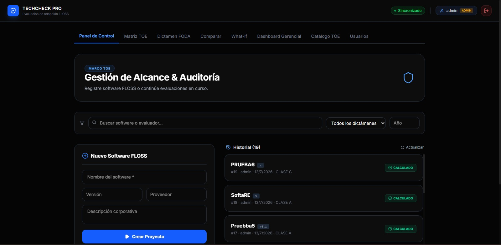
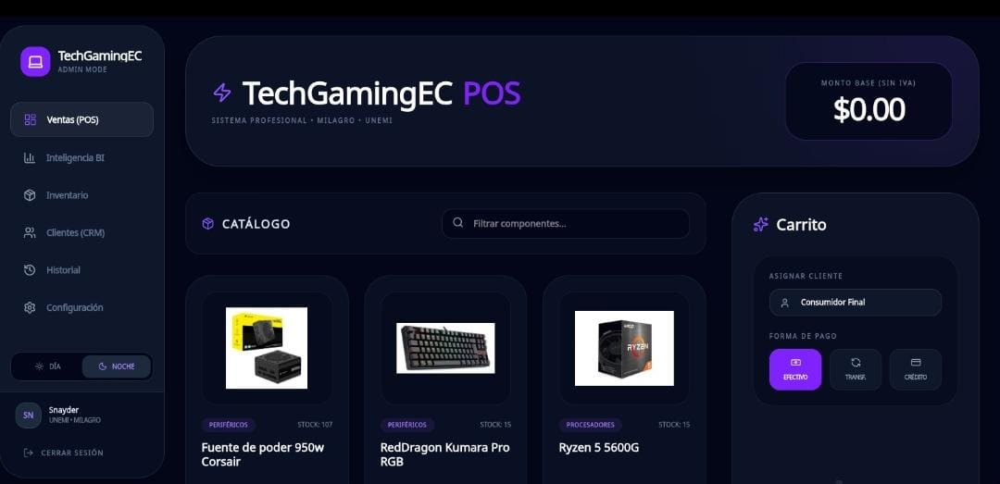
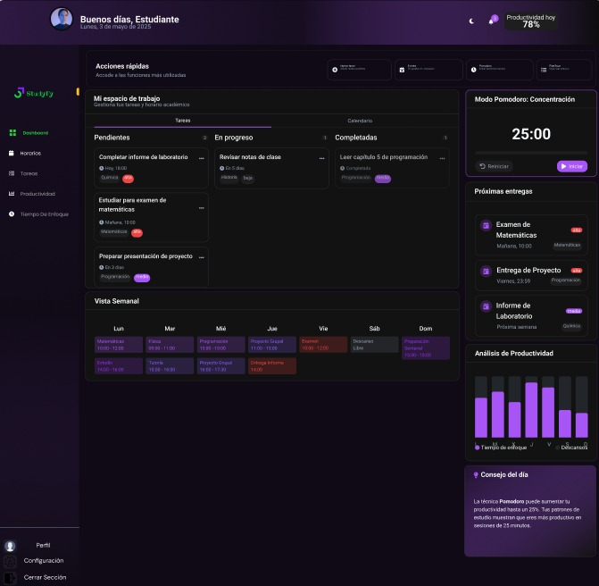

TechCheck Pro
Evalúa si una organización debe adoptar software FLOSS mediante el método GUIOS, con dictamen automático y reportes.
Trabajo reciente
Tres plataformas full-stack reales, cada una resolviendo un problema concreto de principio a fin. Filtra por tecnología o abre el detalle de cada proyecto.

Evalúa si una organización debe adoptar software FLOSS mediante el método GUIOS, con dictamen automático y reportes.

POS completo para retail tecnológico: ventas, créditos, inventario y rentabilidad en una sola plataforma.

Planificador de rutinas de estudio con IA: prioriza tareas y se integra con Google Calendar y Gmail.